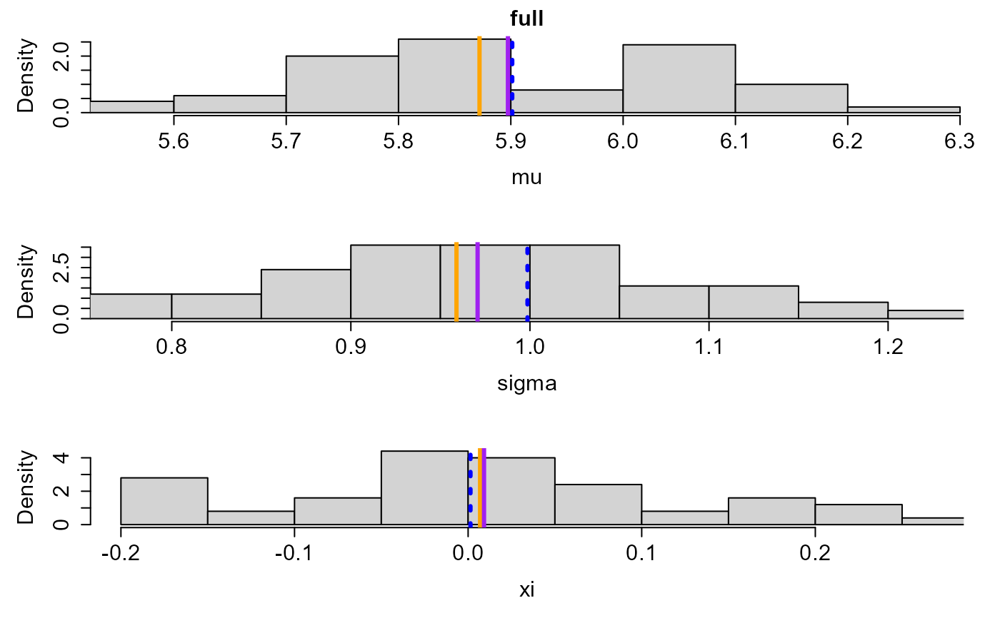
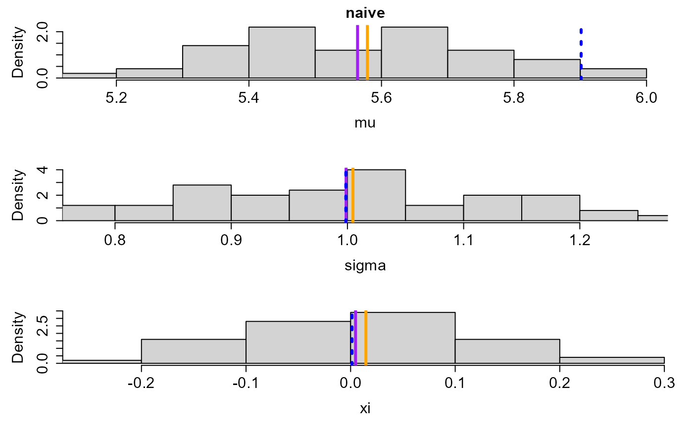
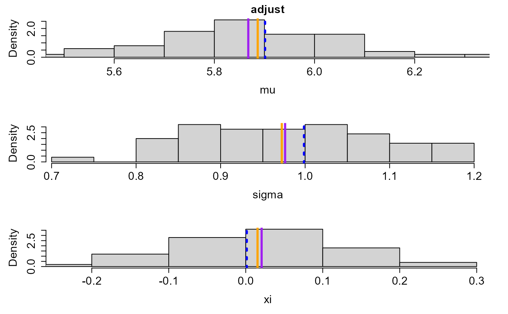
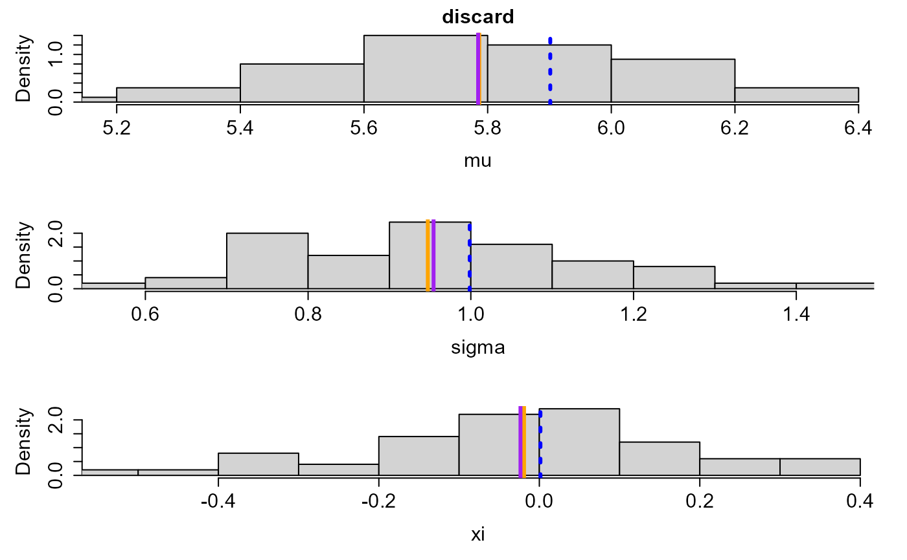
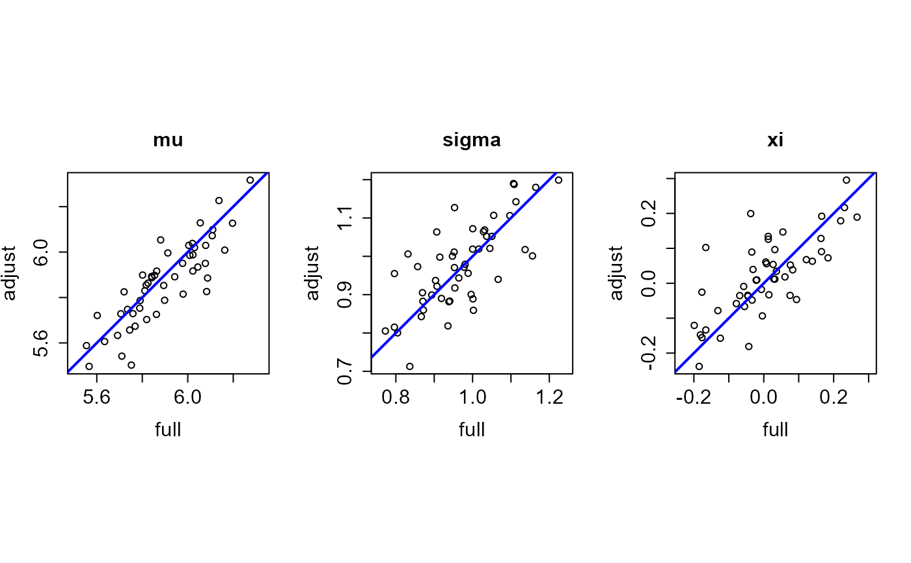

Performs a simulation study to compare different approaches to fitting a
GEV distribution to block maxima when there are missing values in the
underlying raw data. Plot and summary methods enables comparisons of these
approaches to be made. See sim_study_methods.
Usage
sim_study(
nsim,
return_periods,
discard = 25,
level = 0.95,
profile = FALSE,
mult = 32,
faster = TRUE,
epsilon = -1,
quiet = TRUE,
timeout = 10,
...
)Arguments
- nsim
A numeric scalar. The number of simulated datasets.
- return_periods
A numeric vector of return periods for which estimates and confidence intervals for the corresponding return levels are required.
- discard
A numeric scalar. This is used as described in
gev_mleto discard block maxima based on more thandiscardpercentage of missing data.- level
A numeric scalar in (0,1). The confidence level required for confidence intervals, to be passed to
confint.evmiss.- profile
A logical scalar. If
TRUEthen confidence intervals based on a profile log-likelihood are included in the returned object. Ifprofile = TRUEthen the simulations will take far longer to run. The argumentsmult,fasterandepsilonare tuning parameters of the profiling algorithm.- mult
A positive numeric scalar. Controls the increment by which the parameter of interest is increased/decreased when profiling above/below its MLE. The increment is
mult * se / 100whereseis the estimated standard error of the estimator of the parameter. Decreasingmultprofiles at more points but will be slower. The default,mult = 2should be sufficiently small to produce a smooth looking plot of the profile log-likelihood usingplot.confint_gev. To estimate the confidence limits more quickly, the value ofmultcan be increased and/or the argumentfasterset toTRUE.- faster
A logical scalar. If
faster = TRUEthen the profiling of the log-likelihood in search of a lower (upper) confidence limit is started at the corresponding symmetric lower (upper) confidence limit.- epsilon
Only relevant if
profile = TRUE. A numeric vector of values that determine the accuracy of the confidence limits.epsilonis recycled to the length of the parameter vectorparm.If
epsilon[i] > 0then this value is passed as the argumentepsilonto theitp::itpfunction, which estimates the parameter values for which the profile log-likelihood for parameteridrops to the value that defines the confidence limits, once profiling has been successful in finding an interval within which this value lies.If
epsilon[i] < 0quadratic interpolation is used, which will tend to be faster.If
epsilon[i] = 0then linear interpolation is used, which will be faster still.
- quiet
A logical scalar. If
quiet = FALSEthen the number of the current simulated dataset is printed to the console. Otherwise, nothing is printed.- timeout
Argument
timeoutpassed toR.utils::withTimeout. Only relevant ifprofile = TRUEandreturn_periodsis supplied. If a call toconfint.return_leveltakes longer thantimeoutseconds then the calculation is terminated andNAvalues returned for the confidence limits.- ...
Further arguments to be passed to
sim_data.
Value
A list with class c("sim_study", "list"), with the
following components.
parameters: a12bynsimmatrix. Columnigives results for simulation numberi. The rows contain 3 sets of estimates of \(\mu\), \(\sigma\) and \(\xi\), as follows.rows 1-3 (
full): using the full data, that is, with no missing values.rows 4-6 (
adjust): with adjustment for the number of non-missing values.rows 7-9 (
naive): no adjustment for the number of non-missing values.rows 10-12 (
discard): some block maxima may be discarded.
ses,lower_sym,upper_sym,lower_prof,upper_prof: objects with the same structure asparameters, containing the corresponding estimates standard errors and lower and upper limits of 100level% confidence intervals.lower_profandupper_profare included only ifprofile = TRUE.rl_ses,rl_lower_sym,rl_upper_sym,rl_lower_prof,rl_upper_prof: analogous to the objects immediately above but relating to the return levels of interest.rl_lower_profandrl_upper_profare included only ifprofile = TRUE.nsim: the input value ofnsim.distn: the name of the distribution from which data are simulated, that is, the argumentdistnpassed tosim_data.distn_args: user-supplied arguments fordistn.block_length: the block length used to create simulated block maxima.return_periods: the input argumentreturn_periods.true_return_levels: a vector containing the true level for each component ofreturn_periods.
The row and column names of the matrices parameters and return_levels
help to describe what is contained in the matrix.
The simulation settings, generated by a call to sim_data with
blocks = 0 are provided, as an attribute named "sim_data_args".
Details
The simulation study is based on raw data simulated from a
user-supplied probability distribution. Missing values are created in
these full data to produce a reduced raw dataset. Samples of block maxima
are created from each of these two datasets. See sim_data.
Three approaches are taken to estimate the 3 parameters of GEV
distribution used to model these block maxima. In each case, parameters
are estimated using maximum likelihood estimation, as described below.
See also gev_mle.
Full. Using the full data.
Adjust. Using the reduced dataset, with an adjustment for the numbers of non-missing values underlying each block maximum.
Naive. Using the reduced dataset, with no adjustment made for the presence of missing raw values.
Discard. Any block maximum for which greater than
discardpercent of the underlying raw values were missing is discarded and no further adjustment is made.
The arguments mult = 32, faster = TRUE and epsilon = -1 passed to
confint.evmiss are set with the aim of calculating quickly confidence
intervals based on a profile log-likelihood (if profile = TRUE). However,
for a large simulation study setting faster = FALSE may be more reliable
because it may prevent convergence issues for some simulated datasets.
Examples
# In practice, increasing nsim to 1000, say, is suggested
set.seed(12345)
#### Exponential data
res <- sim_study(nsim = 50, return_periods = c(100, 1000), discard = 25)
### Plots
## Return levels
# Marginal 100-block return level estimates by approach
plot(res)
# Compare 100-block return level estimates between approaches
plot(res, distn = "joint")
## GEV parameter estimates
# (a) Each parameter marginally, by approach
plot(res, what = "mu")
plot(res, what = "sigma")
plot(res, what = "xi")
# (b) Each parameter, comparing approaches
plot(res, what = "mu", distn = "joint")
plot(res, what = "sigma", distn = "joint")
plot(res, what = "xi", distn = "joint")
# All parameters marginally, for each approach
plot(res, what = "all", approach = "full")

plot(res, what = "all", approach = "naive")

plot(res, what = "all", approach = "adjust")

plot(res, what = "all", approach = "discard")

# All parameters, comparing pairs of different approaches
plot(res, what = "all", distn = "joint", approach = c("full", "adjust"),
vertical = FALSE)

plot(res, what = "all", distn = "joint", approach = c("adjust", "naive"),
vertical = FALSE)
plot(res, what = "all", distn = "joint", approach = c("adjust", "discard"),
vertical = FALSE)
### Summaries
## GEV parameter estimates
# Comparison to what would be obtained from the full dataset
summary(res)
#>
#> Call:
#> summary.evmiss_sim_study(object = res)
#>
#> mu sigma xi
#> bias,adjust -0.02971768 0.005540924 0.011477016
#> bias,naive -0.33348632 0.028073818 -0.004436578
#> bias,discard -0.11284213 -0.016571757 -0.032669671
#> sd,adjust 0.09408087 0.078692990 0.083157879
#> sd,naive 0.09594831 0.088741469 0.083109443
#> sd,discard 0.20835560 0.171469168 0.156154284
#> rmse,adjust 0.09776158 0.078098891 0.083118289
#> rmse,naive 0.34674930 0.092226280 0.082393684
#> rmse,discard 0.23511096 0.170552822 0.157999318
#> median_bias,adjust -0.02768807 0.010619613 0.009718407
#> median_bias,naive -0.32316146 0.045845386 -0.006228680
#> median_bias,discard -0.13840627 -0.034639349 -0.006093888
#> iqr,adjust 0.13134064 0.064760903 0.093964235
#> iqr,naive 0.09232500 0.134221664 0.081747247
#> iqr,discard 0.26139553 0.212108985 0.184119907
#> mae,adjust 0.07694070 0.058404502 0.062774961
#> mae,naive 0.33348632 0.080407347 0.061358095
#> mae,discard 0.20102487 0.136232027 0.115837595
#> isNA,adjust 0.00000000 0.000000000 0.000000000
#> isNA,naive 0.00000000 0.000000000 0.000000000
#> isNA,discard 0.00000000 0.000000000 0.000000000
# Comparison with a penultimate approximation
summary(res, vsfull = FALSE)
#>
#> Call:
#> summary.evmiss_sim_study(object = res, vsfull = FALSE)
#>
#> mu sigma xi
#> bias,full -0.003839986 -0.0278597431 0.007790091
#> bias,adjust -0.033557669 -0.0223188192 0.019267107
#> bias,naive -0.337326303 0.0002140746 0.003353513
#> bias,discard -0.116682118 -0.0444314999 -0.024879580
#> sd,full 0.171366225 0.1042391559 0.119435053
#> sd,adjust 0.181173355 0.1121491021 0.112824824
#> sd,naive 0.181756862 0.1248581050 0.114293505
#> sd,discard 0.274357871 0.2004838735 0.199664994
#> rmse,full 0.169687362 0.1068861585 0.118491024
#> rmse,adjust 0.182464862 0.1132431118 0.113340520
#> rmse,naive 0.382313851 0.1236034032 0.113194484
#> rmse,discard 0.295603642 0.2033815775 0.199217923
#> median_bias,full -0.029151248 -0.0396456609 0.005521644
#> median_bias,adjust -0.014729294 -0.0262364061 0.013937393
#> median_bias,naive -0.322532299 0.0061424001 0.013259862
#> median_bias,discard -0.114827063 -0.0515110337 -0.020418590
#> iqr,full 0.254301659 0.1311864912 0.128656835
#> iqr,adjust 0.260346039 0.1598136807 0.134456547
#> iqr,naive 0.256441257 0.1988598654 0.135090267
#> iqr,discard 0.374511341 0.2882915300 0.192845955
#> mae,full 0.144175428 0.0865922318 0.092610775
#> mae,adjust 0.143941034 0.0918008426 0.090542135
#> mae,naive 0.341211780 0.1015589837 0.089672794
#> mae,discard 0.233671262 0.1656333584 0.152840558
#> isNA,full 0.000000000 0.0000000000 0.000000000
#> isNA,adjust 0.000000000 0.0000000000 0.000000000
#> isNA,naive 0.000000000 0.0000000000 0.000000000
#> isNA,discard 0.000000000 0.0000000000 0.000000000
## Return levels
# Comparison to what would be obtained from the full dataset
summary(res, what = "return", return_period = c(100, 1000))
#>
#> Call:
#> summary.evmiss_sim_study(object = res, what = "return", return_period = c(100,
#> 1000))
#>
#> 100-year return level 1000-year return level
#> bias,adjust 0.1338941 0.31124101
#> bias,naive -0.2857942 -0.37258118
#> bias,discard -0.2823538 -0.06670583
#> sd,adjust 0.7959645 2.23852312
#> sd,naive 0.7400999 2.02363763
#> sd,discard 1.3593917 3.64364309
#> rmse,adjust 0.7992596 2.23777502
#> rmse,naive 0.7864294 2.03765154
#> rmse,discard 1.3750311 3.60763938
#> median_bias,adjust 0.1858141 0.23345390
#> median_bias,naive -0.1531247 -0.21822221
#> median_bias,discard -0.4439982 -0.42997635
#> iqr,adjust 0.9250834 1.84839863
#> iqr,naive 0.9472337 1.91217151
#> iqr,discard 1.8061014 3.33523390
#> mae,adjust 0.6066761 1.54091701
#> mae,naive 0.5704983 1.45369248
#> mae,discard 1.1003469 2.52357506
#> isNA,adjust 0.0000000 0.00000000
#> isNA,naive 0.0000000 0.00000000
#> isNA,discard 0.0000000 0.00000000
# Comparison with a penultimate approximation
summary(res, what = "return", return_period = c(100, 1000), vsfull = FALSE)
#>
#> Call:
#> summary.evmiss_sim_study(object = res, what = "return", return_period = c(100,
#> 1000), vsfull = FALSE)
#>
#> 100-year return level 1000-year return level
#> bias,full 0.14925733 0.7678878
#> bias,adjust 0.28315139 1.0791288
#> bias,naive -0.13653691 0.3953066
#> bias,discard -0.13309652 0.7011819
#> sd,full 1.24978525 3.3256363
#> sd,adjust 1.35168836 3.4911734
#> sd,naive 1.12824863 2.9490215
#> sd,discard 1.83593058 5.0337124
#> rmse,full 1.24619487 3.3805786
#> rmse,adjust 1.36773349 3.6206415
#> rmse,naive 1.12522371 2.9460245
#> rmse,discard 1.82234546 5.0322113
#> median_bias,full 0.03182451 0.2036225
#> median_bias,adjust 0.05210663 0.2318654
#> median_bias,naive -0.35517359 -0.1829064
#> median_bias,discard -0.41121698 -0.5478823
#> iqr,full 1.45106005 3.2602849
#> iqr,adjust 1.83618493 4.2763547
#> iqr,naive 1.50931836 3.5145841
#> iqr,discard 2.08413213 5.6041252
#> mae,full 0.94110029 2.3387866
#> mae,adjust 1.02879180 2.5172677
#> mae,naive 0.91453792 2.1899685
#> mae,discard 1.47064799 3.4850419
#> isNA,full 0.00000000 0.0000000
#> isNA,adjust 0.00000000 0.0000000
#> isNA,naive 0.00000000 0.0000000
#> isNA,discard 0.00000000 0.0000000
# Example of a user-defined statistics function
stat_fn <- function(x) {
return(c(mean = mean(x, na.rm = TRUE), sd = sd(x, na.rm = TRUE)))
}
summary(res, what = "return", statistics = stat_fn)
#>
#> Call:
#> summary.evmiss_sim_study(object = res, what = "return", statistics = stat_fn)
#>
#> 100-year return level 1000-year return level
#> mean,adjust 0.1338941 0.31124101
#> mean,naive -0.2857942 -0.37258118
#> mean,discard -0.2823538 -0.06670583
#> sd,adjust 0.7959645 2.23852312
#> sd,naive 0.7400999 2.02363763
#> sd,discard 1.3593917 3.64364309
#### Normal data
res <- sim_study(nsim = 50, distn = "norm")
plot(res)
summary(res, what = "return", return_period = c(100, 1000))
#>
#> Call:
#> summary.evmiss_sim_study(object = res, what = "return", return_period = c(100,
#> 1000))
#>
#> 100-year return level 1000-year return level
#> bias,adjust 0.053600129 0.134791049
#> bias,naive -0.019047339 0.041619887
#> bias,discard -0.033148840 0.027804247
#> sd,adjust 0.198918601 0.502021789
#> sd,naive 0.177874838 0.461368402
#> sd,discard 0.243497104 0.557371611
#> rmse,adjust 0.204083835 0.514931050
#> rmse,naive 0.177114285 0.458623813
#> rmse,discard 0.243318450 0.552469842
#> median_bias,adjust 0.044679395 0.082608287
#> median_bias,naive -0.003284024 0.024593172
#> median_bias,discard -0.012996795 0.000804812
#> iqr,adjust 0.120857345 0.274562594
#> iqr,naive 0.117635172 0.230124355
#> iqr,discard 0.217267031 0.480510699
#> mae,adjust 0.132998679 0.309433674
#> mae,naive 0.110236850 0.265913996
#> mae,discard 0.164905141 0.367073189
#> isNA,adjust 0.000000000 0.000000000
#> isNA,naive 0.000000000 0.000000000
#> isNA,discard 0.000000000 0.000000000